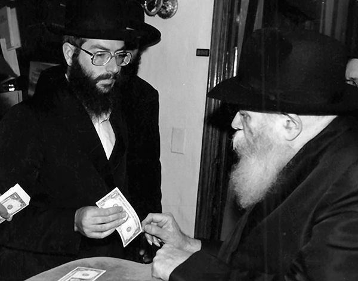

The Rebbe’s Dollar Makes the Rounds
This fascinating story told by Rabbi Chanoch Henich Zilberstrom began with a simple telephone request to donate a dollar he had personally received from the Rebbe, Melech HaMoshiach. It eventually led to an incredible series of unexpected messages revealing to whom the dollar really belonged.
Translated by Michoel Leib Dobry

The following story made waves in many Anash communities throughout Eretz HaKodesh. It began two years ago, when Rabbi Chanoch Henich Zilberstrom of Kfar Chabad, mashpia and teacher at Yeshivas Me’or Menachem Chabad in Rechovos, got a telephone call. The caller asked him to donate a dollar that he had personally received from the Rebbe for a very important purpose. The story reached its climax a few weeks ago at the end of the Gimmel Tammuz farbrengen at the Beis Menachem Synagogue in Kfar Chabad.
The story was highlighted by a chain of Divine Providences leading to one conclusion: The leader of the generation is alive and well. “We see clearly how the Rebbe continues to lead his flock, the entire Jewish People,” said Rabbi Zilberstrom in a voice filled with emotion.
WHAT A DREAM WE HAD…
“It all began two years ago,” said Rabbi Zilberstrom as he began his story. “One day, my telephone rang. The young man on the line identified himself as Shneur Hershkowitz, son of Rabbi Yisroel Hershkowitz, the Rebbe’s shliach in Ofakim. He told me about the recent passing of his young sister Chaya Mushka, of blessed memory, a tragedy that had shocked all of us. Shneur added that his father and other family members had decided to establish a learning program for baalos t’shuva in honor of the Shloshim, in addition to progressing with the construction of a replica of 770 in Ofakim.
“We have just received the necessary permits,” he happily informed me, “but the building costs are considerable, and we have to organize a dinner to raise funds for this purpose.” As a means of encouraging people to open their hearts – and their wallets – towards contributing to this important project, he said that they were planning to make a public sale of several dollars received directly from the Rebbe. He asked if I would be willing to donate such a dollar.
“To be quite honest, I had a difficult time deciding what to do. On the one hand, there is no greater privilege than to respond to such a request and participate in a special memorial project in honor of this young shlucha and all the mivtzaim that she had done during her lifetime. On the other hand, who wants to give away dollars that he received on various occasions from the Rebbe himself?
“I tried to be evasive, telling him that there are people who received many more dollars than I did. In fact, the years when the Rebbe gave out dollars with far greater frequency were when I was already in Eretz Yisroel, and as a result, I had only a very small quantity in my possession. However, this young man, the son of Rabbi Hershkowitz from Ofakim, was not deterred so easily as he continued his appeal.
“‘How did you get my name anyway?’ I asked him with a tone of surprise.
“He told me that the call was a case of total Divine Providence. The family had prepared a list of Chabad Chassidim of appropriate ages, i.e. those who had likely received more than a few dollars from the Rebbe, and I had been included on that list.
“I eventually asked him to give me an hour to think about it, privately hoping that he would find more donors in the meantime. This way, he wouldn’t need my dollar after all. However, after that conversation, something happened that could be defined as nothing less than an actual miracle.
“During that hour, one of my daughters told me that she had a dream the previous night. In her dream, she was in Beis Chayeinu – 770 during dollars distribution together with thousands of others. The crowds were simply incredible. She stood in line, and a certain point, she was privileged to pass by the Rebbe and receive a dollar from him.
“As she was telling me her story, I suddenly remembered a dream that I too had experienced that very same night! In my dream, I met with Rabbi Hershkowitz from Ofakim, and we were speaking about the tragic passing of his daughter. At the end of our conversation, I tried to say something to comfort and strengthen him after his terrible loss. However, for some reason, I felt that I wasn’t able to find the right words.
“I was stunned. I hadn’t told anyone about my dream, and here my daughter had a dream on the same subject. I felt that these two dreams, together with the phone call I had received from Ofakim asking that I donate one of my Rebbe dollars, were obviously a sign from Heaven that this is what I must do. So when Shneur Hershkowitz called back, I told him that I would not only give him a dollar, I would write a letter explaining why I had agreed to do so.
“I pulled out my personal document file containing the letters and dollars I was privileged to receive from the Rebbe. Looking through the dollars, I came across one with an inscription that I had received it on the fifteenth of Av, the special day regarding which the Talmud states that ‘there were no holy days as happy for the Jews as Chamisha-Asar B’Av and Yom Kippur.’ I gave this dollar because it had been given during a time of comfort. I wrote an expressive letter and faxed it to the Hershkowitzs’ home on the morning of Erev Rosh Chodesh Menachem Av.
“Shortly thereafter, a deeply moved Rabbi Hershkowitz called me. It turned out that on the day of his daughter’s Shloshim, everyone gathered at the family home before traveling to the cemetery. Naturally, the mood was one of sadness and gloom. Then, the letter arrived, and it gave everyone a feeling of hope and encouragement that the Rebbe was thinking about them and had sent them a dollar as a bracha and a source of comfort.
“When I finally had a chance to ask Rabbi Hershkowitz how many dollars he had managed to collect, he replied: ‘Only one dollar – the one we got from you.’
“In a letter of thanks that he sent me later, Rabbi Hershkowitz added, “A very special thanks for the deeply moving letter you sent – I read it at the Shloshim commemoration and it created much excitement.”
AN OLD NEW PICTURE
That concludes the first part of the story. The rest is no less amazing, a miraculous kind of closing of the circle, which took place during the Gimmel Tammuz farbrengen at the Beis Menachem Synagogue in Kfar Chabad.
“This farbrengen was unique, as numerous shluchim took part, bringing many of their supporters to join in the experience. A Chabad choir sang niggunim, and various speakers came to the rostrum to discuss the greatness of the Rebbe. Among those I met there was a group of Chabad supporters from Zichron Yaakov led by the local shliach, Rabbi Yosef Yitzchak Freiman.
“We were happy to see one another again. Rabbi Freiman had been one of my students during the years I taught in the Chabad yeshiva in Rishon L’Tziyon. Towards eleven o’clock that evening, I noticed that he got up with the members of his group, and they all headed towards the exit to begin their journey home. For my part, I remained in my place as the farbrengen continued. A few minutes later, Rabbi Freiman re-entered the hall, looking for me. He came up and handed me a picture of a young Chassid receiving a dollar from the Rebbe. He told me that he was certain that I was the young man in the picture.
“I looked at the picture and quickly identified myself. He was right. I was quite excited to see a picture of me with the Rebbe that I did not know existed previously. A gift of this type in the middle of a farbrengen in honor of Gimmel Tammuz immediately brought back golden memories of days gone by…
“While in his presence, I turned the picture over, and to my great surprise, I saw written on its reverse side: ‘Hershkowitz, Ofakim’… I immediately thought to myself that Rabbi Hershkowitz wanted to show me appreciation for the dollar I had given him by finding a picture of me with the Rebbe and sending it with Rabbi Freiman to present to me personally. I asked Rabbi Freiman, ‘Who gave you this picture?’ He didn’t know what I was talking about. No one had given him the picture; he had bought it just a moment earlier… He told me that he had heard that a picture of him was found in one of the albums of the Chabad photographer, R’ Mordechai Baron. When he left the farbrengen, he saw R’ Mordechai standing near the front of the shul with his famous sales counter, and he took the opportunity to look through the pictures.
“After checking a few albums, he suddenly noticed a picture of me at Sunday dollars. ‘Since I had seen you just a few minutes earlier,’ he said, sharing his thoughts with me, ‘I decided to buy the picture for you.’ Since he had been my student in yeshiva when my beard was still black, he remembered my appearance.
“Now I was totally confused.
“‘So why are the words ‘Hershkowitz, Ofakim’ written on the back of the picture?’ I asked him. Rabbi Freiman shrugged his shoulders in puzzlement. He had no idea.
“Now the story had become doubly perplexing. I left the hall to look for R’ Mordechai Baron, who was still standing with his merchandise, and ask him about this picture. In the meantime, Rabbi Freiman had left with his entourage and headed back to Zichron Yaakov.
“R’ Mordechai Baron did not understand why I was so surprised. It turned out that these pictures belonged to someone from Crown Heights who wanted to sell them to the Chassidim who appeared in them. However, since he couldn’t identify all these people, certainly not after more than twenty years, he decided to pay an avreich who knew many Anash to identify the figures in the photos. This Chassid apparently identified me in this picture by mistake as Rabbi Hershkowitz, and that is what created all the confusion.
“A myriad of thoughts crossed my mind. This was obviously no coincidence or inadvertent error; there was an obvious message from Heaven here.
“I returned from that farbrengen amazed and inspired. I felt that the Rebbe had sent me a sign that this dollar had been meant to reach Rabbi Hershkowitz all along. What other explanation could there be for such an error?
“When this story took place, I realize that I had received a clear message that the Rebbe continues to bring salvation to the world in his role as leader of our generation. Now all that remains is to see the hisgalus at the True and Complete Redemption.”
Nosson Avrohom. "The Rebbe’s Dollar Makes the Rounds." Beis Moshiach, no. 889 (July 25, 2013).